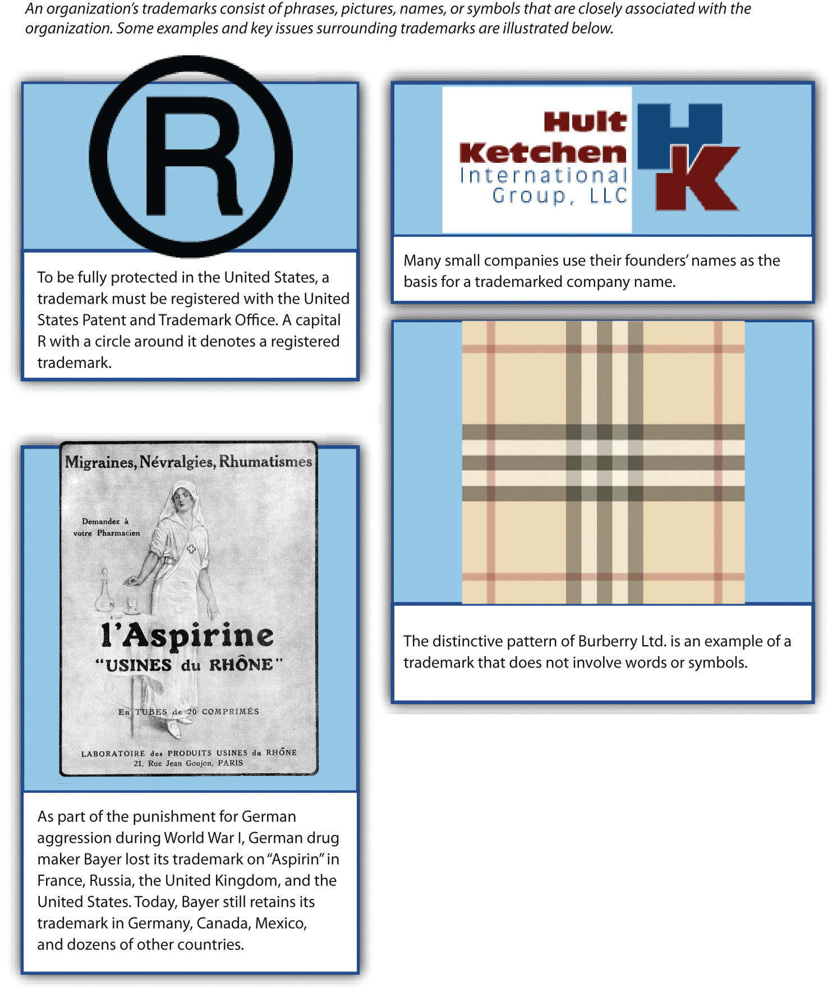

The inability of competitors to imitate a strategic resource is a key to leveraging the resource to achieve long–term competitive advantages. Companies are clever, and effective imitation is often very possible. But resources that involve intellectual property reduce or even eliminate this risk. As a result, developing intellectual property is important to many organizations.
Intellectual propertyCreations of the mind, such as inventions, artistic products, and symbols. refers to creations of the mind, such as inventions, artistic products, and symbols. The four main types of intellectual property are patents, trademarks, copyrights, and trade secrets (Figure 4.5 "Types of Intellectual Property"). If a piece of intellectual property is also valuable, rare, and nonsubstitutable, it constitutes a strategic resource. Even if a piece of intellectual property does not meet all four criteria for serving as a strategic resource, it can be bundled with other resources and activities to create a resource.
A variety of formal and informal methods are available to protect a firm’s intellectual property from imitation by rivals. Some forms of intellectual property are best protected by legal means, while defending others depends on surrounding them in secrecy. This can be contrasted with Southwest Airlines’ well-known culture, which rivals are free to attempt to copy if they wish. Southwest’s culture thus is not intellectual property, although some of its complements such as Southwest’s logo and unique color schemes are.
PatentsLegal decree that protects inventions from direct imitation for a limited period of time. are legal decrees that protect inventions from direct imitation for a limited period of time (Figure 4.6 "Patents"). Obtaining a patent involves navigating a challenging process. To earn a patent from the US Patent and Trademark Office, an inventor must demonstrate than an invention is new, nonobvious, and useful. If the owner of a patent believes that a company or person has infringed on the patent, the owner can sue for damages. In 2011, for example, a private company named EBSCO alleged that retailer Bass Pro Shops sold a product that violated EBSCO’s patent on a deer-hunting stand that helps prevent hunters from falling out of trees. Rather than endure a costly legal fight, the two sides agreed to settle EBSCO’s complaint out of court.
Patenting an invention is important because patents can fuel enormous profits. Imagine, for example, the potential for lost profits if the Slinky had not been patented. Shipyard engineer Richard James came up with the idea for the Slinky by accident in 1943 while he was trying to create springs for use in ship instruments. When James accidentally tipped over one of his springs, he noticed that it moved downhill in a captivating way. James spent his free time perfecting the Slinky and then applied for a patent in 1946. To date, more than three hundred million Slinkys have been sold by the company that Richard James and his wife Betty created.
Patenting inventions such as the Slinky helps ensure that the invention is protected from imitation.
Image courtesy of Roger McLassus, http://upload.wikimedia.org/wikipedia/commons/f/f3/2006-02-04_Metal_spiral.jpg.
TrademarksPhrase, picture, name, or symbol used to identify a particular organization. are phrases, pictures, names, or symbols used to identify a particular organization (Figure 4.7 "Trademarks"). Trademarks are important because they help an organization stand out and build an identity in the marketplace. Some trademarks are so iconic that almost all consumers recognize them, including McDonald’s golden arches, the Nike swoosh, and Apple’s outline of an apple.
Other trademarks help rising companies carve out a unique niche for themselves. For example, French shoe designer Christian Louboutin has trademarked the signature red sole of his designer shoes. Because these shoes sell for many hundreds of dollars via upscale retailers such as Neiman Marcus and Saks Fifth Avenue, competitors would love to copy their look. Thus legally protecting the distinctive red sole from imitation helps preserve Louboutin’s profits.
Fashionistas instantly recognize the trademark red sole of Christian Louboutin’s high-end shoes.
Image courtesy of Arroser, http://wikimediafoundation.org/wiki/File:Louboutin_altadama140.jpg.
Trademarks are important to colleges and universities. Schools earn tremendous sums of money through royalties on T-shirts, sweatshirts, hats, backpacks, and other consumer goods sporting their names and logos. On any given day, there are probably several students in your class wearing one or more pieces of clothing featuring your school’s insignia; your school benefits every time items like this are sold.
Schools’ trademarks are easy to counterfeit, however, and the sales of counterfeit goods take money away from colleges and universities. Not surprisingly, many schools fight to protect their trademarks. In October 2009, for example, the University of Oklahoma announced that it was teaming with law enforcement officials to combat the sale of counterfeit goods around its campus.Ward, C. 2009, October 8. OU works to prevent trademark infringement. The Oklahoma Daily. Retrieved from http://www.oudaily.com/news/2009/oct/08/ou-works-prevent-trademark-infringement This initiative and similar ones at other colleges and universities are designed to ensure that schools receive their fair share of the sales that their names and logos generate.
Figure 4.7 Trademarks
Images courtesy of unknown author, http://en.wikipedia.org/wiki/File:Aspirine-1923.jpg (bottom left); Wilinckx, http://en.wikipedia.org/wiki/File:Trademark-symbool.png (top left); Hult Ketchen International Group, LLC (top right); Helix84, http://en.wikipedia.org/wiki/File:Burrbery_check.gif (middle right); Unnamed Publisher (bottom right).
CopyrightsProvides exclusive rights to the creators of original artistic works such as books, movies, songs, and screenplays. provide exclusive rights to the creators of original artistic works such as books, movies, songs, and screenplays (Figure 4.8 "Copyrights"). Sometimes copyrights are sold and licensed. In the late 1960s, Buick thought it had an agreement in place to license the number one hit “Light My Fire” for a television advertisement from The Doors until the band’s volatile lead singer Jim Morrison loudly protested what he saw as mistreating a work of art. Classic rock by The Beatles has been used in television ads in recent years. After the late pop star Michael Jackson bought the rights to the band’s music catalog, he licensed songs to Target and other companies. Some devoted music fans consider such ads to be abominations, perhaps proving the merit of Morrison’s protest decades ago.
He looks calm here, but the licensing of a copyrighted song for a car commercial enraged rock legend Jim Morrison.
Image courtesy of Polfoto/Jan Persson, http://upload.wikimedia.org/wikipedia/commons/1/15/The_Doors_in_Copenhagen_1968.jpg.
Over time, piracyTheft of trademark or copyrighted material. has become a huge issue for the owners of copyrighted works. In China, millions of pirated DVDs are sold each year, and music piracy is estimated to account for at least 95 percent of music sales. This piracy deprives movie studios, record labels, and artists of millions of dollars in royalties. In response to the damage piracy has caused, the US government has pressed its Chinese counterpart and other national governments to better enforce copyrights.
Trade secretsFormulas, practices, and designs that are central to a firm’s business and that remain unknown to competitors. refer to formulas, practices, and designs that are central to a firm’s business and that remain unknown to competitors (Figure 4.9 "Trade Secrets"). Trade secrets are protected by laws on theft, but once a secret is revealed, it cannot be a secret any longer. This leads firms to rely mainly on silence and privacy rather than the legal system to protect trade secrets.
Some trade secrets have become legendary, perhaps because a mystique arises around the unknown. One famous example is the blend of eleven herbs and spices used in Kentucky Fried Chicken’s original recipe chicken. KFC protects this secret by having multiple suppliers each produce a portion of the herb and spice blend; no one supplier knows the full recipe. The formulation of Coca-Cola is also shrouded in mystery. In 2006, Pepsi was approached by shady individuals who were offering a chance to buy a stolen copy of Coca-Cola’s secret recipe. Pepsi wisely refused. An FBI sting was used to bring the thieves to justice. The soft-drink industry has other secrets too. Dr Pepper’s recipe remains unknown outside the company. Although Coke’s formula has been the subject of greater speculation, Dr Pepper is actually the original secret soft drink; it was created a year before Coca-Cola.
The recipe for Dr Pepper is a secret dating back to the 1880s.
Image courtesy of anyjazz65, http://www.flickr.com/photos/49024304@N00/4262262427/sizes/l/in/photostream.